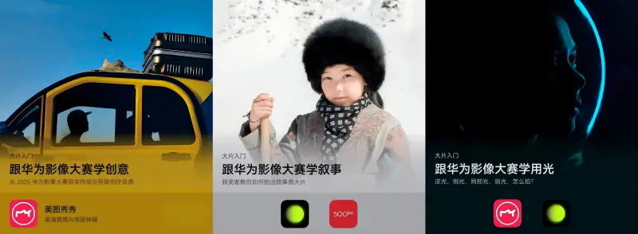

A photo that moves people may start with a unique discovery. It is shaped by a deliberate story, and enriched by precise use of light and shadow. This is not some far-off mystery. It is an approach you can learn and practice. On Huawei AppGallery, follow the 2025 Huawei Image Contest series to find the path from idea to finished photo.

Creative angles: remake the ordinary world
Ordinary scenes can give you fresh visuals. Lower your viewpoint and use a reflection on water to remake the space. Or shoot from below to make a floating effect and break everyday habits. If the original photo is not good enough, refine it in the Meitu app on AppGallery to make the composition and colors match what you want.
Photo storytelling: tell a story with a set
If photography is a second telling of what you see, a set of photos is a third telling. When you shoot a set, design a clear structure and story logic for the whole tale. Make sure each photo has a job no other photo can do, and keep the whole set from feeling long or repetitive. To learn storytelling, open 500px China and look at the featured sets on Home > Albums to find ideas. In post, use the Xingtu app under Filters > Advanced Edit to unify the tone and strengthen the series feel.
Light magic: add emotion and soul
Photography is the art of light. Use backlight to give a photo a story. In post, use the Meitu app under Color > Light Effects to pull down the shadows a little and strengthen the rim light. Use side light to shape the texture of a portrait and make the face look more three-dimensional. In low light, use the colored glow of neon at night for an almost moving look. You can also shoot creative effects with local light. Use the Xingtu app under Local Adjustment to fine-tune the light ratio and add more drama.
AppGallery adds a large amount of fresh content every day. It covers shows, films, exhibitions, photo and beauty guides, travel tips, everyday life hacks, and game picks. It also recommends quality apps. If you see something you like, tap Share at the bottom of the Story page to forward it to friends and share the content and the app. On the Discover page, you will also find series such as step-by-step guides to dream guesthouses, Healing Road Together, Master Eye Premiere, and Snap. You can always find content to your taste.
Open the Apps or Games page to explore more apps. Tap Categories in the middle to find more top apps. Explore apps in the Charts. Check the Downloads chart for popularity and the Reviews chart for ratings, and filter for more hidden gems. Through the Big Updates list, you can also follow the latest on top apps, including new features and upgraded experience, and use the newest version right away.
How to find it: open AppGallery, go to the Apps or Games page, and tap Categories, Charts, or Big Updates in the middle.
There are now more than 27 million devices running HarmonyOS 5 or later. HarmonyOS 6 has also been released, and you are welcome to upgrade. Drop by AppGallery every day for more creative ideas and tools!